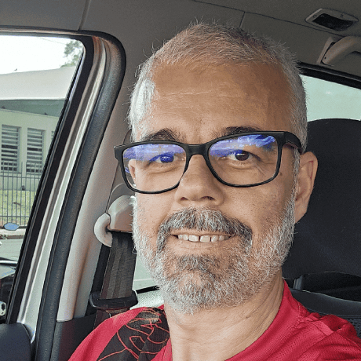

Odair Costa "BuckRogers-dev"
Formação Acadêmica em Serviço Social e pós graduação em Gestão em Políticas Sociais e Trabalho Social com Famílias. Apaixonado por leirura, cultura e tecnologia, tanto hardware - minha especialidade - quanto programação (software), meu novo "desafio" de estimação, sempre buscando novos desafios. Atualmente, sou Policial Penal no estado de São Paulo (com inúmeros cursos de capacitação na área de Segurança e Disciplina prisional), candidato ao Diaconato Permanente da Igreja Católica pela Diocese de Marilia, no segundo ano dos estudos (2026). Logo abaixo, entre nas seções "saiba mais", para ver como cada projeto foi montado.
Minhas skills
HTML5
90%
CSS3
80%
JavaScript
50%
Hardware / Manutenção
100%
Adptabilidade
90%
Trabalho em equipe
95%
Comunicação
100%
Liderança / Espiritualidade
95%
Formação
1981-1994
Escola Estadual Sylvio de Giulli
Primeiro e Segundo Grau
2009-2013
Anhanguera / Uniderp
Serviço Social
2014
Faculdades Adamantinenses Integradas
Pós Graduação em Politicas Sociais
Loading (2026) 2º ano...
Candidato ao Diaconato Permanente
Igreja Católica Apostólica Romana
Projetos

2025
Projeto de Videos
Projeto construído para treinar inserção de vídeos em nosso site.
Saiba mais...
Primeiro projeto, montar um mosaico de videos, hoje algo simples de se fazer, mas mostrou o desafio que estava por vir, começando devagar e evoluindo sempre!

2026
Projeto Cordel
Projeto construído para estilização de um site básico com efeito Paralax.
Saiba mais...
Página mostrando um efeito bastante inusitado: um fundo estático e um site "móvel". Montagem tranquila seguindo os passos do professor Guanabara, site simples e desafiador! Visite o site: Cordel Moderno, elaborado em 2026.

2026
Projeto "Android"
Projeto contando a história da criação do mascote "Android"
Saiba mais...
Site elaborado já com uma boa interface gráfica, começando a responsividade em HTML e CSS, levarei no coração com carinho esse projeto! Acesse o site: Projeto Android, desenvolvido em 2026.

2026
Projeto de Links
Projeto construído para treinamento de inserção de links "redes sociais"
Saiba mais...
Projeto inicial para construção de uma página contendo os links para interação com minhas redes sociais, projeto já bem mais complexo ao ser construído e executado! Visite-o: Redes Sociais, desenvolvido em 2026.

2026
Projeto "Login""
Projeto construído para treinar inserção links para login
Saiba mais...
Site desenvolvido para simular acesso a uma área "segura", noções básicas de como conciliar o HTML e CSS com futuras linguagens de programação que impedem o acesso sem que o usuário esteja "logado" no site. Visite a página em Projeto Login, desenvolvido em 2026.